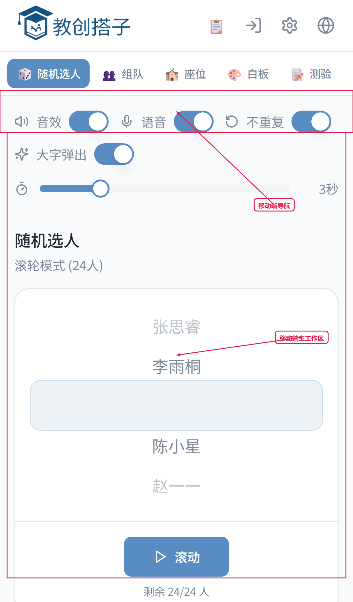
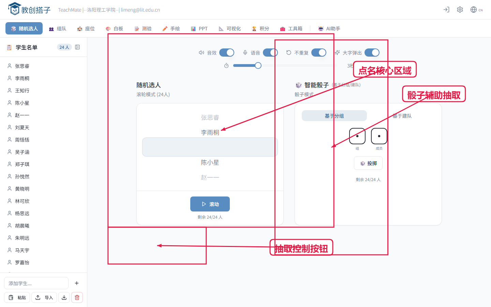
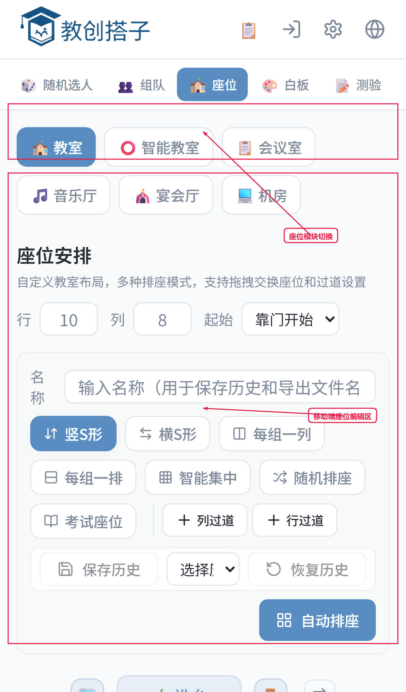
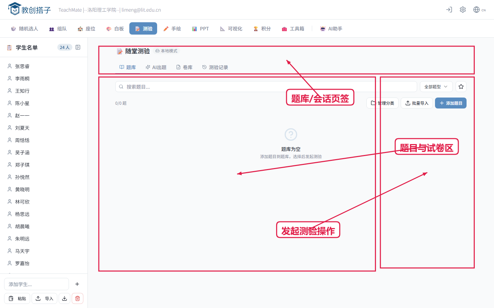

1. 开场与系统定位
培训目标：3 分钟让参训教师建立整体认知。
- 教创搭子是课堂组织、互动、测验、评价、导出的一体化工具。
- 一节课可按“课前准备-课中互动-课后留档”三阶段使用。
- 手机端可完成高频操作，电脑端适合精细编辑。


讲师演示脚本：现场演示：加载名单 -> 切换功能标签 -> 展示主工作区。
版本：2026-03-18
用途：校内培训 / 教研工作坊 / 新教师上手
培训目标：3 分钟让参训教师建立整体认知。

讲师演示脚本：现场演示：加载名单 -> 切换功能标签 -> 展示主工作区。
培训目标：建立高效课堂秩序，减少组织耗时。




讲师演示脚本：现场演示：自动分组 -> 一键排座 -> 导出座位图。
培训目标：让学生“即时参与、可视表达、可量化反馈”。


讲师演示脚本：现场演示：创建互动白板 -> 发布测验二维码 -> 查看统计。
培训目标：构建正向激励与课堂节奏控制能力。


讲师演示脚本：现场演示：批量加分 -> 发放徽章 -> 启动倒计时。
培训目标：确保参训教师可以独立完成一次完整课堂流程。
讲师演示脚本：现场任务：每组教师 15 分钟复现一次课堂全流程。